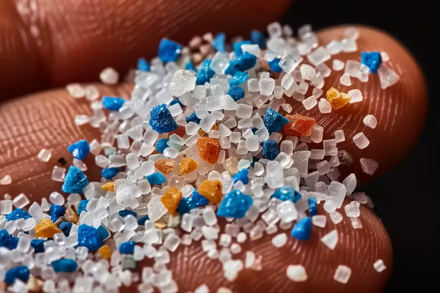
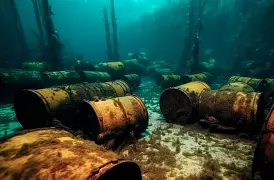
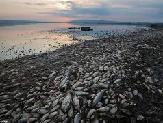

Microplásticos
Fragmentos menores a 5mm que invaden la cadena trófica desde la base.
El grito silencioso de las profundidades ante la negligencia industrial.



Fragmentos menores a 5mm que invaden la cadena trófica desde la base.
Mercurio y plomo filtrados por vertidos químicos sin control.
Áreas con tan poco oxígeno que la vida marina es imposible.
Desde la industria textil hasta la química, el rastro de la producción masiva llega al mar.
Suscríbete para recibir informes sobre el estado de nuestras costas.